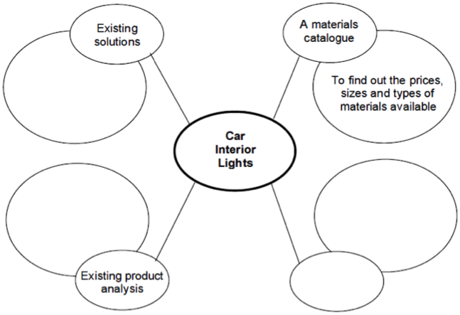
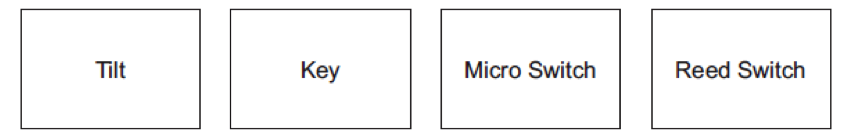

Research, Analysis and Specifications
Table of Contents

1 Introduction
Research
- Before grabbing components and materials, the design of a new product needs to be carefully considered if it is to function as intended when manufactured. Safety is also upmost in a designer’s mind, both at the point of manufacture, and when being used as a finished product.
- When researching a new product, a number of areas might be considered as part of the process:
- Existing product analysis: This is to look at the features, advantages and disadvantages of pre-existing products to see what is currently available.
- Existing solutions: Looking at how others have solved the problem you’re investigating.
- Materials catalogue: This will give an indication of what materials are available to build the new product.
- Web site of rival manufacturers: To get an indication of current design ideas, pricing, mechanisms used, etc.
- Looking at this information may affect your final design by helping to inform the build-cost for the work, the types of mechanisms it will use, the materials it could be made from, or the look/functionality of the product you will design.
Design Specification
- When initially setting out a specification for a product, one might consider a number of different issues, such as (in the case of a coffee machine): -
- Functionality: The dispenser in system must be water-resistant to prevent damage.
- Safety: The dispenser should have no exposed wires or sharp corners, to avoid injury.
- Power Supply: The dispenser should run from the mains, so that it won’t consume batteries needlessly and can run all day.
- Aesthetic/Appearance: The system should use neutral colours (e.g. beige and dark grey) so as to blend into an office environment.
- Durability: The machine should be able to withstand minor knocks, as might be expected in an office environment.
2 Recap
Past Paper Questions
June 2008, Q1. This question is about the design process. The owner of the theme park has asked you to design an Automated Mascot to welcome visitors to the theme park. (Automate – control or operate automatically)
- (a) Analysis. List two factors that you should think about when designing the Automated Mascot and give a reason why each is important. An example has been given. Example:
Factor – The likely cost of the whole project.
Reason – So that it can be built at a reasonable price.
(4 marks)
1 (b) Research. The layout of a research plan for the Automated Mascot is shown below. Complete the research plan by adding suitable research sources and stating the information that you would hope to find. The materials section has been completed for you. (7 marks)
 1 (c) Describe how the information from the analysis and research may affect the final design. (2 marks)
1 (c) Describe how the information from the analysis and research may affect the final design. (2 marks)
1 (d) Design Specification. Give four design requirements for your Automated Mascot. Example:
The mascot must welcome visitors
Function: by waving
Appearance
- Requirement
- Explanation
Materials
- Requirement
- Explanation
Safety
- Requirement
- Explanation
Durability
- Requirement
- Explanation
(8 marks)
June 2008, Q2. This question is about design ideas for the system that makes the mascot move. Study the information given in your Design Specification from Question 1. Use this information to sketch two different design ideas for an Automated Mascot for the theme park.
You must show: -
- function
- appearance
- materials
- safety
- durability
- which parts move.
Marks will also be awarded for: - quality of sketches (2 marks) quality of notes. (2 marks) (6 marks)
Evaluate each idea as follows:
- Explain how your design meets the requirements of the specification.
- Function:
- Appearance:
- Materials:
- Safety:
- Durability:
(5 marks)
June 2008, Q3. This question is about developing the system using mechanisms or pneumatics. Choose one of your ideas for development.
- (a) It was decided that the Automated Mascot should have an electronic sensor to start the movement when a visitor approached it. Using notes and sketches, show clearly how an electronic sensing device could detect a visitor.
- Only show the ‘sensing input’ system for detecting the visitor. Marks will be awarded for:
- a suitable electronic system to detect a visitor (4 marks)
- quality of sketches and notes describing the operation. (4 marks)
- (b) Using notes and sketches, show clearly details of the system that moves the Automated Mascot. Note: -
- The mascot should move continuously
- You should show details of the mechanism and motor
- Show only the moving part of the mascot
- Show the paths of all movement.
Marks will be awarded for: -
- Suitable system to move part of the mascot (10 marks)
- Quality of notes and sketches describing the operation. (2 marks)
June 2008, Q6. This question is about health and safety issues for a roller-coaster system.
- (a) List three risks that an error in the roller-coaster system could cause. (3 marks)
- (b) List two safety checks the operator should do every morning before the public use the ride. (2 marks)
- (c) Suggest how passengers could escape safely from the carriage if the ride stops at the top. (2 marks)
- (d) State two regular maintenance operations for the roller-coaster. (2 marks)
- (e) State two procedures that would ensure the safety of the passengers whilst on the ride. (2 marks)
June 2011, Q1. You should spend about 35 minutes on this question. This question is about the design development of a control system for the interior light in a two door car.
- (a) This part of the question is about research. The layout of a research plan for the car interior light system is shown below. Complete the diagram below by adding suitable research sources and stating the information that you would hope to find. The materials section has been completed for you.
 (b) The first stage is to produce a Design Specification. Describe three issues which you need to consider before you begin to design the control system for the interior light. For each issue give: - Specification point (3x 2 marks) An explanation. (3x 2 marks)
An example has been given to help you.
- /Specification point: When should the light come on?
- Explanation: The interior light should only be ON when either car door is open./
Specification point:
Explanation:
2 Specification point:
Explanation:
3 Specification point:
Explanation:
1(c) Circle the most suitable switch to detect that the door is open. (1 mark) 
June 2011, Q5. You should spend about 15 minutes on this question. This question is about the Health and Safety and maintenance issues affecting commercial passenger lifts.
- (a) Explain two safety features that a commercial passenger lift control system should contain. Give a reason for each feature.
- (i) Feature 1: (1 mark)
- (a) (ii) Reason for Feature 1: (1 mark)
- (a) (iii) Feature 2: (1 mark)
- (a) (iv) Reason for Feature 2: (1 mark)
- (b) Explain two maintenance tasks that should be carried out on a commercial passenger lift.
- (b) (i) Task 1: (1 mark)
- (b) (ii) Explanation of task 1: (2 marks)
- (b) (iii) Task 2: (1 mark)
- (b) (iv) Explanation of task 2: (2 marks)
- (c) Explain one safety procedure taken when the maintenance is carried out.
- (c) (i) Safety procedure: (1 mark)
- (c) (ii) Explanation of safety procedure: (2 marks)
June 2012, Q1. You are advised to spend about 20 minutes on this question. This question is about design processes. You have been asked to design an automatic vent for a greenhouse. The first part of the question is about analysis.
- (a) List two considerations that you should think about when designing the automatic vent for a greenhouse and give a reason why each is important. An example has been given below.
Example – The likely cost of the whole project so that we are able to sell it at a reasonable price.
- Consideration 1:
- Consideration 2:
(4 marks)
The next part of this question is about research.
- (b) The layout of a research plan for the automatic vent for a greenhouse is shown below. Complete the diagram below: -
- by adding another suitable research source (1 mark)
- by stating the information that you would hope to find for each of these research sources. The materials catalogue section has been completed for you.
(3x 2 marks)
- (c) Describe how the information from analysis and research may affect the final design./(2 marks)/
This part of the question is about design specification.
- (d) Give four design requirements for your automatic vent for a greenhouse and an explanation of each requirement. An example is given below.
Requirement: The vent must open when the temperature is above 25°C. Explanation: The vent should open to allow the greenhouse to cool to protect the plants.
- Requirement 1:
- Explanation 1:
- Requirement 2:
- Explanation 2:
- Requirement 3:
- Explanation 3:
- Requirement 4:
- Explanation 4:
(8 marks)
June 2012, Q5a. List two Health & Safety requirements for a coffee vending machine. (4 marks)
June 2012, Q7d. Describe two possible problems of shipping faulty goods to customers. (4 marks)